![Figure 1. Company sign-in screen; local capture with empty credential fields. [Isolated local training environment.]](screenshots/shared-login.png)
Field equipment requests, transfers, inspection and returns
Based on the inspected repository.
Genuine isolated training screenshots.
Production deployment remains unverified.
| Item | Value |
|---|---|
| Version | 1.1 |
| Prepared | 27 October 2026 · Asia/Manila |
| Audience | Active Engineer and Architect accounts |
| Basis | Current repository; source and isolated browser review |
| Scope | 10 authorized primary modules; identical role permissions |
| Companion | Administrator manual and SiteTrace_System_Module_and_Role_Review.md |
Naming: these documents use the requested SiteTrace title. The inspected application displays MCPA (Material & Construction Property Allocation), Construction Asset Management and Accountability System, and BuildRight Corp. Follow the on-screen MCPA labels when using the application. No application branding was changed.
Verification scope: instructions describe the current repository implementation. Most interface screenshots were captured on 12 October using isolated local PGlite records. People & Accountability was refreshed on 27 October after feature removal, using the local functionality-audit fixture. Authentication is modeled locally. They are training illustrations, not production screenshots or proof of deployed services.
The capture browser blocked external HTTPS. Original training captures permitted business reads only after fixture setup; the updated People capture came from a test run that writes only to disposable local fixtures. No live login, migration, stock change, approval, handover, receipt, return, role change, or notification-read update was performed. The live REQ-00001 test was not accessed. Its unchanged state was not independently compared because production was not contacted.
Operational availability: use the procedures only in an authorized company workspace whose required Supabase database functions, policies and services are installed. The original training captures did not execute write procedures; current automated regression checks use disposable local records. Supabase deployment, email delivery, private file retrieval, optical QR scanning and the monitoring scheduler remain unverified in production.
Screenshot conventions: all figure captions identify the local training environment. Fixture names, example.test addresses, asset references beginning DOC-, and transaction numbers in the 007xx range are synthetic. Password fields are empty or absent. No authentication tokens or receiving QR secrets are embedded in the manuals. Figures are numbered separately in each manual.
SiteTrace/MCPA records the location, holder and condition of construction tools and materials. Engineer and Architect accounts request available equipment for assigned projects, coordinate transfers of equipment they hold, inspect equipment addressed to them, record returns and report damage/loss. The application uses permanent company profile IDs for accountability, even if names are duplicated.
Engineer and Architect have the same route, action and backend ownership permissions. Only the displayed role label differs. Actual visible records depend on individual custody, requester/sender/receiver identity, active project assignment and current transaction state. An empty list for one Architect is not a different role policy.
Your company administrator manages accounts, project assignments, approvals, repair completion and missing recovery. You cannot add/edit inventory, edit projects, manage users, approve requests, complete repairs, confirm recovery, use Reports, Material Requests or Purchases. The presence of legacy files or a URL does not grant those permissions.
Source evidence: js/permissions.js; js/auth.js; js/navigation.js; supabase/migrations/202610040001_authenticated_access.sql and 202610060002_recipient_identity.sql.
Open the pages and actions authorized for your company identity.
An issued company account, an Active company profile.
The application opens the role’s home module. Admin, Engineer, Architect and Tool Handler open Dashboard; Secretary opens Material Requests.
An Auth login without an authorized active profile is refused. Incorrect email or password., an inactive-account message, or a profile-verification failure requires correction or administrator assistance. There is no public account registration.
Recover access to an existing company account.
A valid password-reset email, configured Supabase Auth redirects and working email delivery.
The password is saved by Supabase Auth and the user signs in again.
An invalid or expired reset link needs a fresh password reset. This documentation session did not send or receive email.
Dashboard opens Movement overview with My assigned equipment, quantity-based equipment totals, project summaries, movement charts, incoming transfers, open requests, maintenance/missing alerts and custody indicators. Request Tools, Receive / Transfer, Return Tools and Report an Issue open the relevant modules. Use Open in Next actions or a linked recent activity entry for the supporting transaction.
Dashboard inventory is a personal custody view, while project summaries and movement context use other authorized data. Equipment Tracking is specifically restricted to equipment whose current_holder_id matches your permanent company profile. Requests uses a separate eligible catalog so you can request available company stock. These scopes should not be treated as the same list.
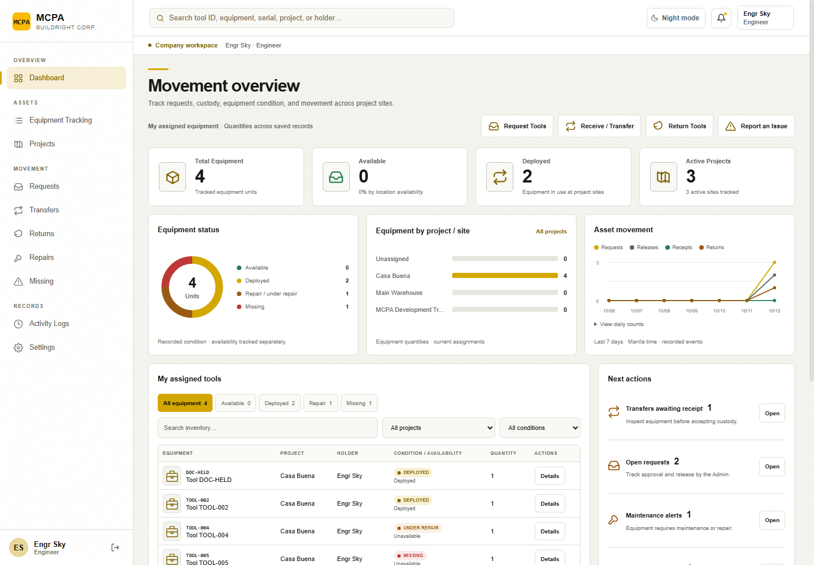
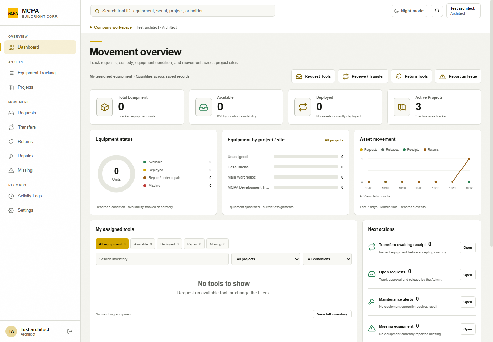
| Sidebar label | What you can do |
|---|---|
| Dashboard | Monitor your custody and authorized action queues. |
| Equipment Tracking | Search and inspect equipment in your confirmed custody. |
| Projects | View projects assigned to your profile, their authorized inventory and history. |
| Requests | Submit equipment requests and follow approval/release; withdraw/cancel when eligible. |
| Transfers | Send Transfer, Receive Transfer and History; scan/enter codes, inspect and follow up. |
| Returns | Record a return for eligible held tools and review saved returns. |
| Repairs | Report held-tool faults and follow repair status. |
| Missing | Report held-tool loss and follow recovery status. |
| Activity Logs | Read/search/export authorized movement history. |
| Settings | My account identity, display mode and logout. |
Material Requests appears in an old menu definition but is removed by the current permission filter for Engineer/Architect. Reports, Purchases and People & Accountability are also restricted. On phones/tablets, open the navigation drawer, select a module and use horizontal scrolling for wide tables if needed.
Confirm your identity, select a display preference and close your session.
Any authorized role; offline demo uses Exit demo.
Display mode changes immediately. Log Out clears the local application workspace and asks Supabase to end the local session.
Sign out could not be confirmed. requires Retry sign out before leaving a shared device. Settings does not provide a profile editor, email editor, role switcher or in-session password-change form.
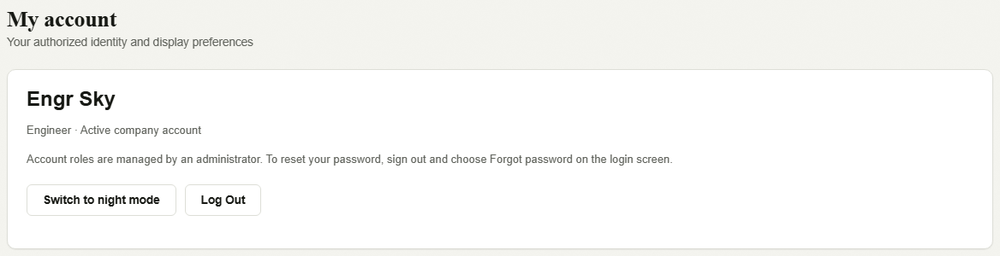
Source evidence: js/dashboard-view.js; js/movement-overview.js; js/app.js module selection; 1-admin/modules/settings/settings.js.
Equipment Tracking reads the narrow personal-equipment snapshot. It shows equipment in your confirmed custody and relevant authorized movement history. Equipment reserved for you or sent to you does not become personal custody until receipt. No equipment is currently assigned to you. is a valid empty state; go to Requests to request available stock, or Transfers to inspect an incoming handover.
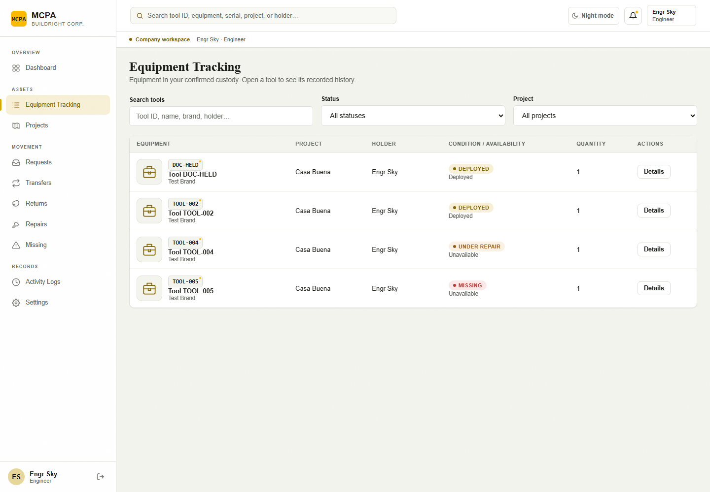
Status and availability are separate. The current availability helper shows Deployed for equipment at a project with In Use status, Available when there is no project or the normalized state is In Office, and Unavailable otherwise. An Available status at a project can therefore display Unavailable. Request eligibility separately requires available stock with no holder, positive quantity and no approved reservation or pending/refused transfer. Do not use a dashboard count or availability caption alone as permission to issue equipment. Movement summary totals can also include Withdrawn/Canceled records in the open count; use each saved status badge to decide what remains actionable.
Locate a held tool and review its accountable state.
Engineer or Architect; equipment in confirmed custody.
The tool detail and authorized recorded events are displayed without changing custody.
Tools no longer in your custody leave the personal view. Incoming/reserved equipment belongs in Transfers/Requests; all-project equipment is not a personal assignment. A detail action such as Transfer only opens the module; it does not complete that action.
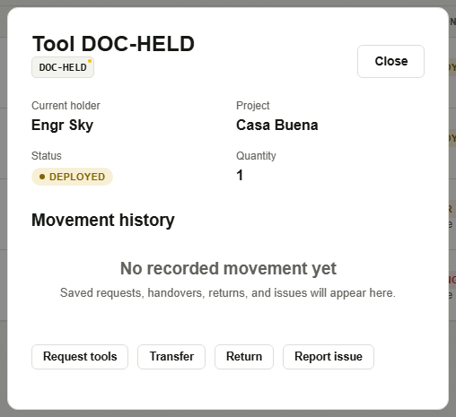
| Record / label | Meaning and next step |
|---|---|
| Request: Pending review | Awaiting Admin approval or rejection. The requester may Withdraw request while eligible. |
| Request: Approved | Selected whole asset records are reserved; custody is unchanged. Admin can release. The requester may Cancel reservation before release. |
| Request: Released | A linked transfer and handover code exist. This does not mean the receiver has accepted custody. |
| Request: Inspected / completed | The linked receiver inspection has completed. Review its actual per-tool conditions and any damage/missing cases. |
| Request: Rejected / Withdrawn / Canceled | The original record stays in history. Rejection includes a reason. There is no edit-and-resubmit action for the saved request; submit a new request if needed. |
| Transfer: Awaiting receipt | Pending handover. Sender custody and the tool reservation remain until inspection/receipt or eligible cancellation. |
| Transfer: Damage refused · awaiting sender | The entire handover is held. Custody and reservations remain. Eligible sender/requester follow-up is required. |
| Transfer: Inspected / completed | The named receiver submitted all inspections. Review the recorded conditions; completion may include accepted damage or missing items. |
| Return: Returned | A saved return record; the implementation has no separate Admin approval queue for returns. |
| Repair: Reported / Under repair / Completed | Report created; Admin started work; Admin closed the case after completion. Under repair can be derived from the repair case rather than a different raw equipment value. |
| Missing: Missing / Recovered | Unresolved loss report, or an Admin-recorded recovery. Damaged recovery opens a repair case. |
The equipment status vocabulary includes Available, In Use, For Repair, Under Repair, Missing and Disposed in the current views. Product planning text also mentions Borrowed, Transferred, For Return, Repaired and Sold, but separate user-facing lifecycles for those labels were not confirmed. Use saved request/transfer/report states to understand what actually happened.
Source evidence: js/movement-overview.js: personal, detail, load; js/equipment-tracking.js; supabase/migrations/202610100001_engineer_portal.sql: mcpa_personal_equipment_snapshot.
Requests offers positive-quantity, Available equipment not already reserved or in a pending/refused transfer. The backend additionally refuses requests for equipment with a current holder. Ask the current holder to transfer an in-use tool rather than requesting it as available stock. Choose an existing destination assigned to your profile; the broad destination dropdown may show projects you cannot request for, so confirm assignment first.
Selecting a tool moves the whole asset record and its quantity. There is no per-request partial-quantity field or bulk-record split. If the record represents a set or a bulk stock, coordinate the actual whole-record allocation with Admin.
Ask Admin to allocate available equipment for assigned project work.
Active Engineer/Architect; an assigned destination and eligible available, unheld stock.
A Pending review request is saved for your identity; no equipment is received or assigned yet.
A Pending request does not reserve stock until Admin approves. Competing requests can exist; approval rechecks stock. Blank purpose, no selection, invalid date, unauthorized project or held/reserved stock is refused.
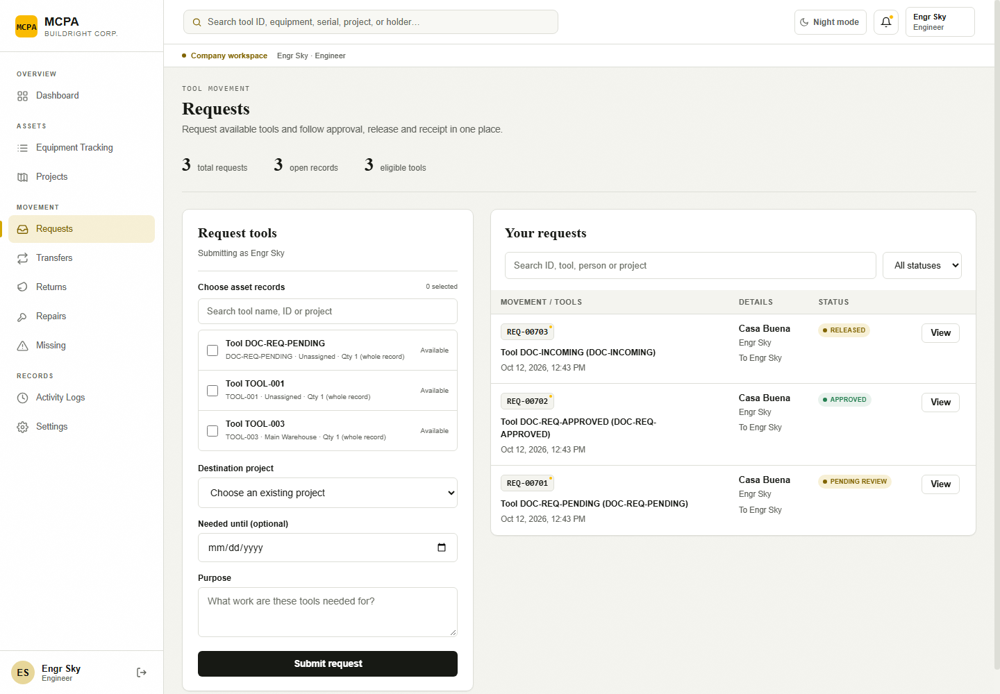
Understand whether equipment is reviewed, allocated or awaiting receipt.
Requester or another account with authorized visibility.
The saved request explains approval and release; linked transfer details guide receipt.
Approved means reserved, not received. Released means a transfer exists. A saved request has no editable tool/date/purpose form or automatic resubmission control.
Close your unfulfilled need while preserving the original history.
The original Engineer/Architect requester; Pending review for withdrawal, Approved without a transfer for reservation cancellation; cancellation migration installed.
Withdrawal saves Withdrawn. Reservation cancellation saves Canceled and releases allocation; custody is unchanged.
These controls disappear when state/ownership is ineligible. Once release creates a transfer, use the eligible transfer cancellation procedure. Admin cannot perform these new field cancellations. You cannot restore a withdrawn/canceled request; create a new request if still needed.
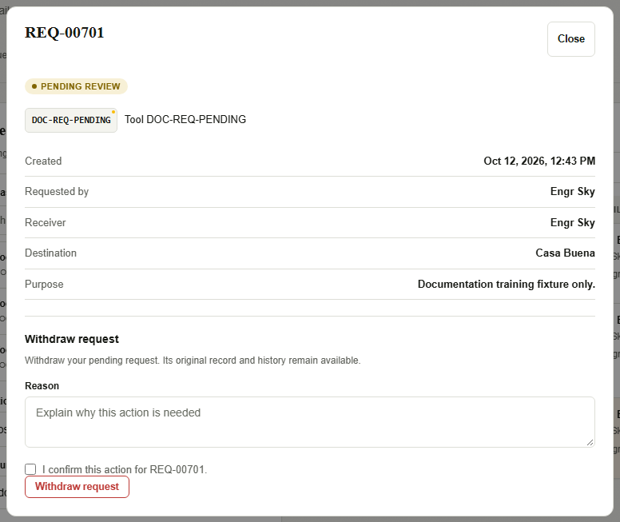
Source evidence: js/movement-ui.js: eligibleTools, createForm, adjustmentForm, submit; js/movement-cloud.js; migrations 202610060002_recipient_identity.sql and 202610100004_movement_cancellation.sql.
| Code / QR | Purpose | What it does not do |
|---|---|---|
| Your receiving QR | Identify the active receiving person and their assigned active project before dispatch. Payload begins MCPA-RECEIVER:. | It does not create a transfer, reserve tools or accept custody. |
| Transfer handover QR / code | Identify the TRF- handover created after dispatch, for lookup and inspection by the named receiver. | It does not bypass inspection or make another person the receiver. |
| Equipment tag | Identify an asset ID. The handover scan path may match a unique pending handover addressed to you. | It cannot transfer ownership merely because it was scanned. |
The receiving QR expires after 15 minutes. Generate My Receiving QR revokes older references for the same receiver; Revoke receiving QR invalidates the current reference. A valid QR can assist multiple transfers while valid, but each dispatch still checks the current account and project assignment. Transfer handover codes are saved references, not the 15-minute receiving tokens.
Provide a verified receiving identity and project before transfer creation.
Active Engineer/Architect assigned to at least one active receiving project; portal RPC and QR display library.
The sender can resolve the short-lived receiver/project context. No equipment custody changes.
No assigned receiving project. requires Admin to assign an active project. Generating a QR writes only its own ephemeral reference and revokes older ones. QR bitmaps and optical scanning were unavailable in this capture session; the genuine receiving interface is shown before generation.
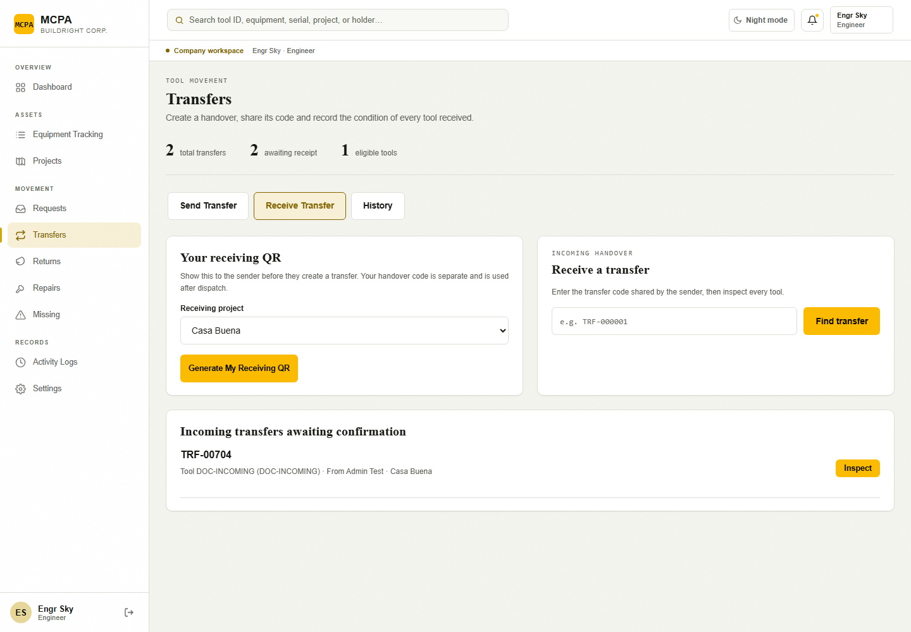
Dispatch equipment currently held by you to the intended field receiver.
Active Engineer/Architect; positive-quantity In Use tools in your custody, no reservation/pending transfer; active receiving Engineer/Architect assigned to the active destination.
An Awaiting receipt handover reserves the selected records. Original custody remains until the named receiver inspects/receives or an eligible cancellation occurs.
Scanning only fills receiver/project. Submit rechecks active assignment and QR validity if used. Stale QR, mismatched name/project, changed assignment, held-by-other stock and reserved equipment are refused. Record dispatch before equipment leaves the source, in line with company process.
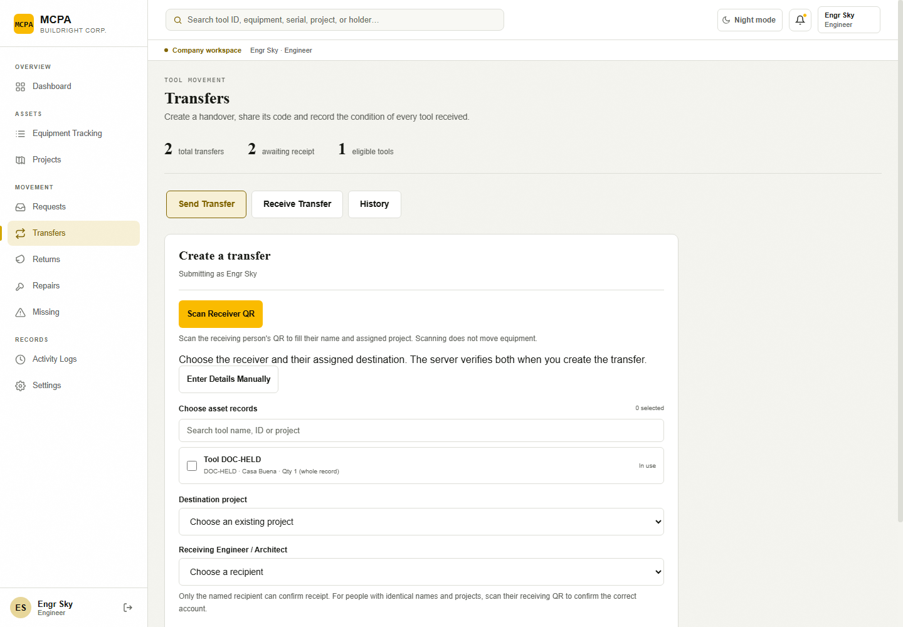
Coordinate the saved handover with its named receiver.
Authorized sender/receiver; saved transfer.
The named receiver can find the handover by its code.
Clipboard permissions may block copying; use the visible reference manually. An unavailable QR bitmap does not prevent manual code lookup. No messaging integration automatically sends the code.
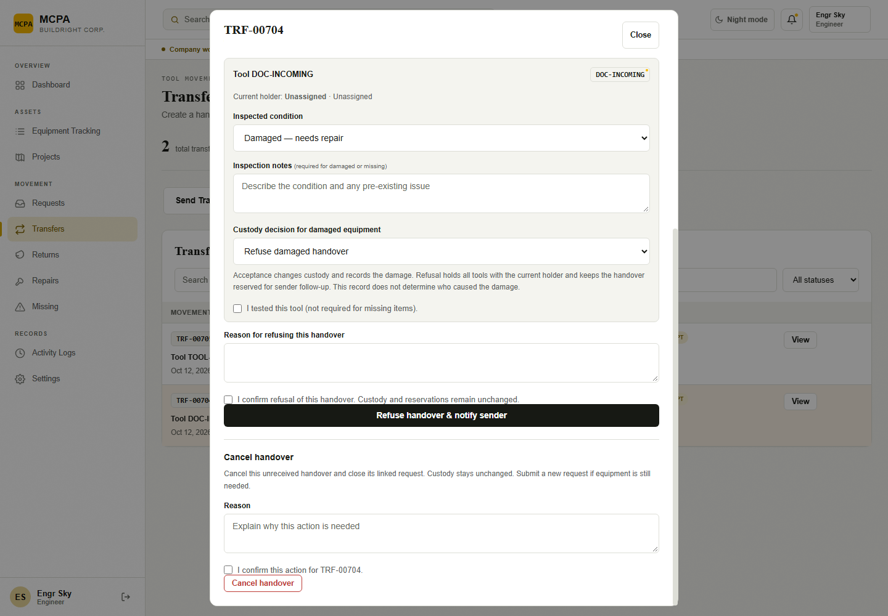
Open the saved transaction before recording receipt.
Named receiving Engineer/Architect; existing authorized handover.
The saved handover opens. No custody changes from lookup/scanning.
No transfer found for that code. requires the original reference and current company data. An asset-tag scan may show details only when no pending handover is addressed to you. Multiple pending matches require the transfer reference and Admin review. The manual lookup dialog can display an authorized record even when you are not its receiver, but it does not offer receipt permission.
Resolve an interrupted dispatch without rewriting history.
Engineer/Architect original field sender, or linked released-request requester for cancellation; original field sender only for reopening; eligible pending/refused state.
Cancellation saves Canceled, releases the reservation and leaves custody unchanged; a linked released request is also closed. Reopening returns the refused transfer to Awaiting receipt without changing custody/reservations.
Refused tools remain reserved until eligible follow-up. Completed receipt cannot be undone by cancellation. A request-linked Admin release can be canceled by its eligible field requester, but that requester is not the original Admin sender and cannot reopen it through the field-sender action.
Source evidence: js/movement-ui.js: receivingProjects, generateReceivingQr, resolveReceivingQr, startCamera, transferLookup, renderDetail; migrations 202610100001_engineer_portal.sql and 202610100004_movement_cancellation.sql.
Inspect physical identity, quantity and condition against the saved tool list. Record each tool as Good — ready for use, Damaged — needs repair or Missing — not received. A non-missing item must be tested and explicitly marked I tested this tool. Damage/missing notes are mandatory. This interface has no inspection-photo upload or partial-quantity acceptance; it records a condition for each entire asset record.
Accept accountability only for inspected equipment.
The named receiving Engineer/Architect; Awaiting receipt transfer with unchanged source custody/status/quantity.
Good items change to your holder/project and In Use. Accepted damaged items change to your holder/project and For repair, with a repair case. Missing items keep source holder/location, become Missing and open a missing case. The handover is Inspected / completed.
Every tool must be represented once; testing is not required for missing items. Receipt is blocked if source custody/status/quantity changed after dispatch or another action already completed the handover. Completion does not mean every item was physically received in good condition.
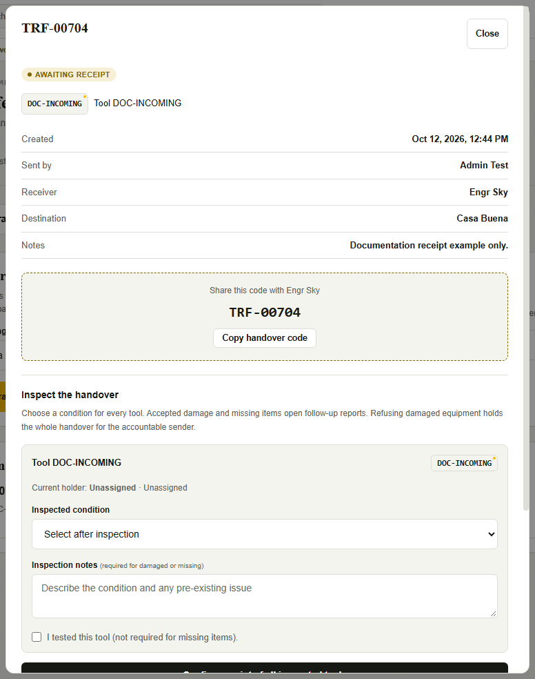
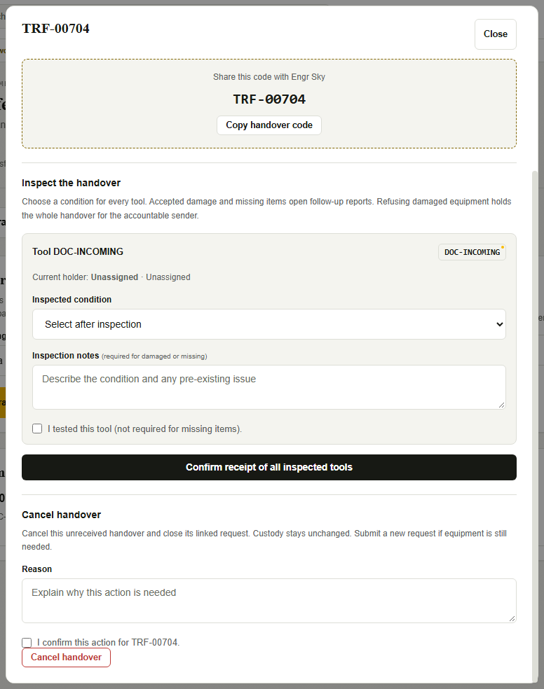
Record a damage refusal and hold the handover for accountable follow-up.
Named Engineer/Architect receiver of an eligible pending handover: active field sender, or initial released request owned by this receiver; cancellation/refusal migration installed.
The whole transfer becomes Damage refused · awaiting sender. All custody/status and reservations stay with their original source state, including the other tools; inspection evidence is saved.
Refusal is not a generic reject button for any transfer. A Tool Handler dispatch without an eligible linked request does not offer this refusal option. If unavailable and custody cannot be accepted, contact the sender/Admin before confirming. Refusal does not determine who caused damage and does not itself open an accepted-damage repair case.
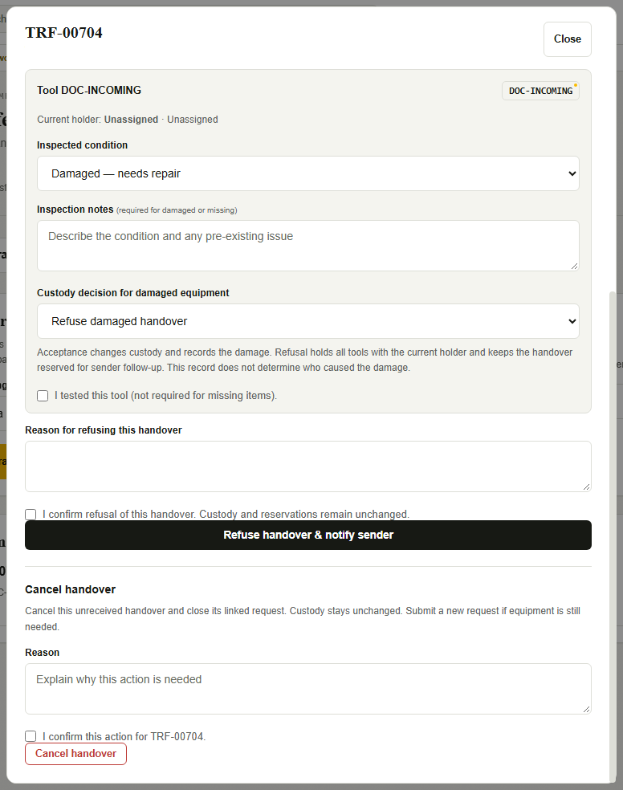
For not-received equipment, choose Missing and explain the discrepancy; do not mark it Good to close the screen. Missing items retain the original custody/location while the missing case is recorded. For accepted damage, the receiver takes custody with the condition documented. The whole-record model cannot record receipt of only part of a quantity; resolve partial-quantity discrepancies with Admin before submitting an inaccurate whole-record inspection.
Source evidence: js/movement-ui.js: conditionFields, readConditions, submit; supabase/migrations/202610060002_recipient_identity.sql: receipt updates; 202610100004_movement_cancellation.sql: refusal eligibility and immutable evidence.
Returns is for positive-quantity In Use equipment held by your identity and not reserved for an approved request or pending/refused handover. The application does not maintain a separately scheduled For Return queue or return-specific QR workflow. Needed until dates and Currently overdue notices help you identify tools whose expected use period ended.
Record actual return condition and release good-tool custody.
Engineer/Architect current holder; eligible In Use tools; actual destination and physical return checked.
The return is saved immediately. Good tools clear the holder, move to the chosen destination and become Available. Damaged tools move to the destination, retain the existing holder and open repair cases. Missing tools keep source holder/location, become Missing and open missing cases.
There is no second Admin acceptance action. Damaged/missing tools do not automatically clear accountability. Returned good tools at a project may still show Unavailable by the location-based helper; read status, holder and eligibility together.
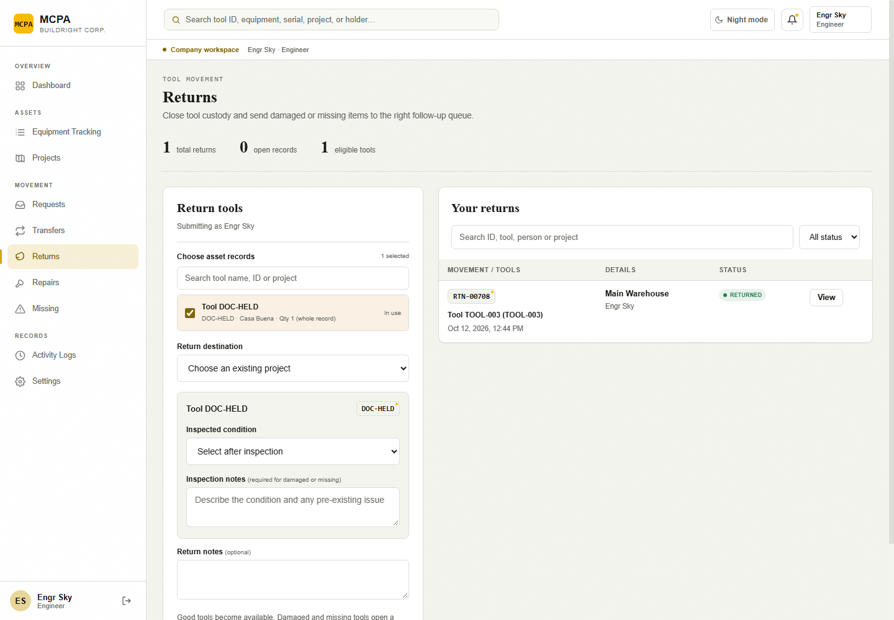
Confirm the saved return and follow-up cases.
Authorized Engineer/Architect returner or readable related record.
The recorded return and any continuing damaged/missing accountability can be reconciled.
Return records have no cancellation, edit, delete, scheduling or separate receipt-confirmation controls in the current interface.
Source evidence: js/movement-ui.js: createForm, syncReturnConditions, submit; supabase/migrations/202610060002_recipient_identity.sql: createReturn and per-condition inventory updates.
Review project accountability and authorized inventory.
Engineer/Architect assigned to a project; project snapshot/history dependency installed.
The real accountable profile and permitted project equipment/history are visible.
Add/Edit/Archive/Restore controls are removed for field accounts. All projects cannot broaden the server scope. Project equipment may be held by someone else; it is not your personal custody. One project has one accountable person. The reviewed deployment note identifies a project_history dependency problem whose live fix remains unverified.
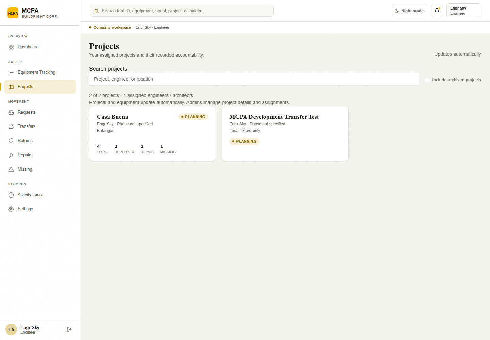
Make an equipment fault visible for Admin resolution.
Engineer/Architect holder; eligible positive-quantity In Use tool without a reservation/pending transfer.
The tool becomes For repair, holder remains, and a reported repair case/activity entry is saved.
You cannot Start repair or Complete repair. Do not submit duplicate reports for an already locked/repair tool. No repair-image attachment, repair-cost editor or technician assignment was confirmed.
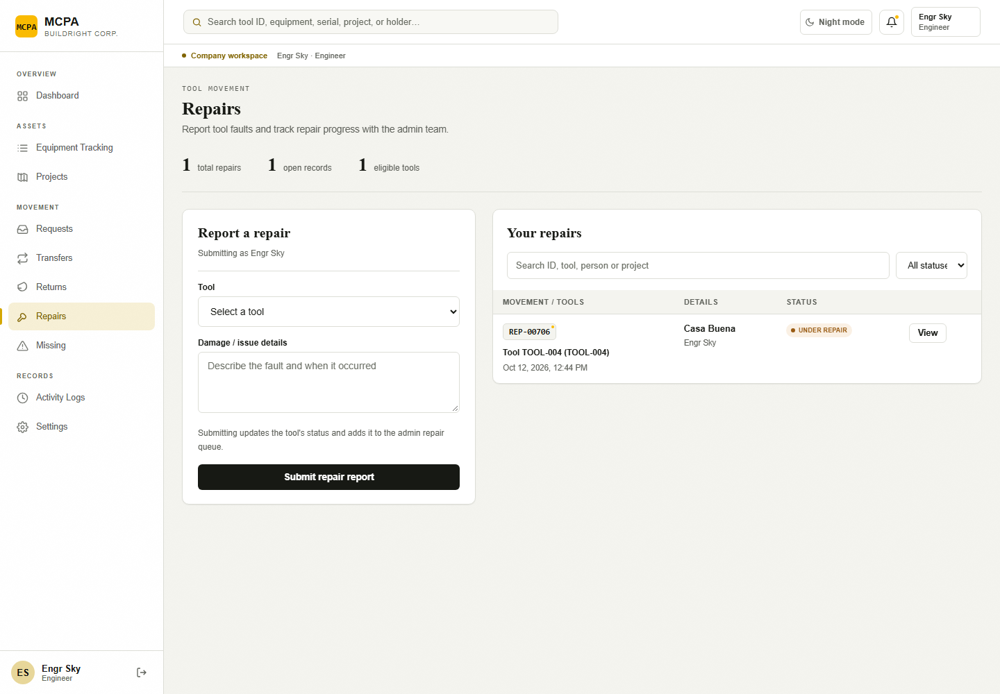
Document a loss and preserve the existing accountability chain.
Engineer/Architect holder; eligible In Use tool without reservation/pending handover.
The tool becomes Missing and a case/activity entry is saved; existing holder/location remain.
Only Admin can Confirm recovery. This report does not assign blame. Do not manually replace custody or hide the original case after finding equipment.
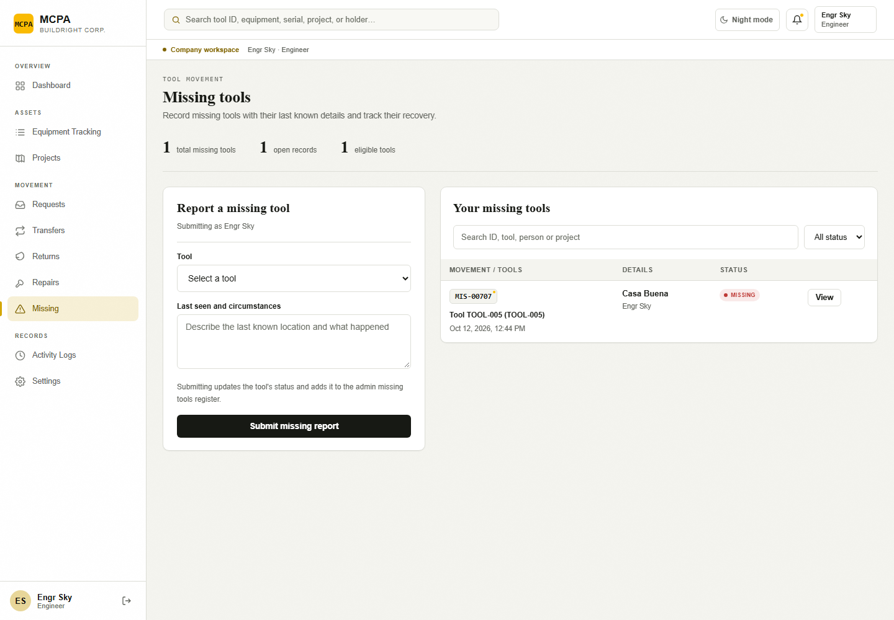
Follow authorized alerts to their supporting records.
Engineer/Architect with monitoring configured; relevant recorded notices.
Your own recorded notices and authorized overdue requests are visible.
Opening the bell alone does not mark all notices read. Overdue/weekly generation requires the trusted backend scheduler. A direct transfer without a linked received request/needed-until date is not automatically the same overdue loan. No SMS, push or email-reminder workflow was confirmed.
Keep a record of your permitted equipment transactions.
Engineer/Architect; Activity Logs access.
An authorized movement-event history is displayed or exported.
The CSV contains authorized movement activity matching the current activity search. It is not an account/purchase/material audit. Preserve private work data when sharing.
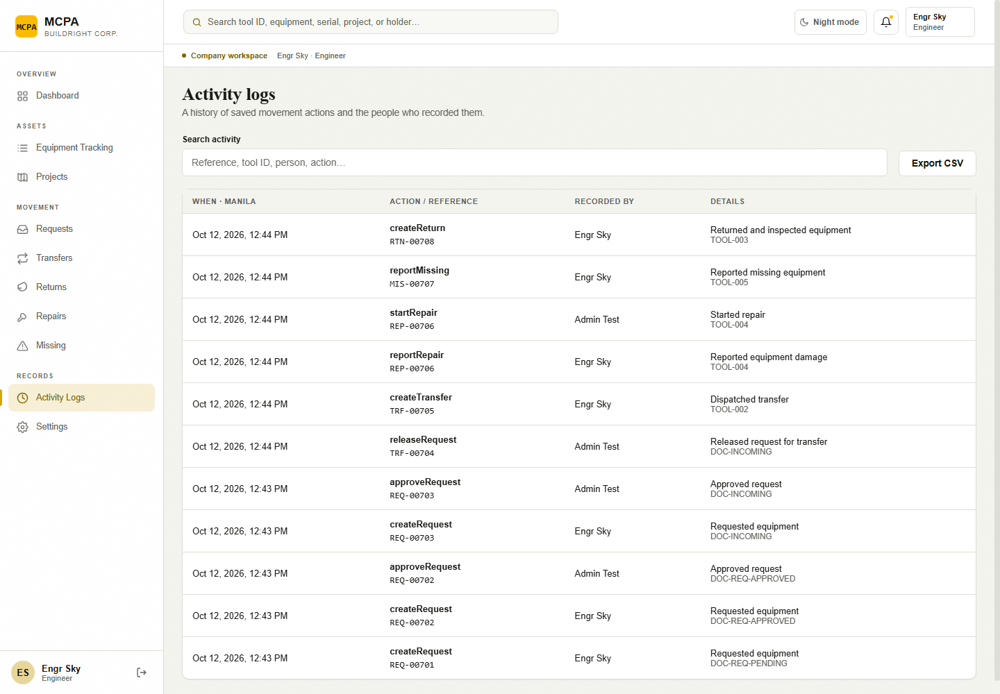
Settings offers My account, display mode and Log Out as described in Chapter 2. Password reset begins after signing out. The login page’s Try offline demo offers Admin, Engineer or Architect sample identities and browser-only records. Demo has no live database access and hides accounts, Material Requests and Purchases; Projects is read-only and Your receiving QR requires an authenticated company account. Do not treat demo records as company transactions.
Source evidence: 1-admin/modules/sites/sites.js; js/movement-ui.js; js/movement-overview.js; js/monitoring.js; js/auth.js and js/permissions.js.
| Symptom / message | What to do |
|---|---|
| Incorrect email or password. | Re-enter the issued email and password. Use Forgot password? with a valid email if needed. |
| Inactive / unauthorized profile | Contact Admin to verify account status and Auth linkage. A successful Auth login alone does not grant application access. |
| Access restricted | Use Return to your workspace. Changing the URL does not provide a missing permission. |
| Unable to load this screen | Use Retry after checking the connection. A module download failure is different from a database configuration failure. |
| Saved successfully, but the updated records could not load. | Refresh and check the original reference before any new submission. The save may already have committed. |
| Unable to sync changes. Retrying automatically… | The active page retries on focus, reconnect and roughly every 30 seconds while visible. Keep drafts and compare refreshed records before acting. |
| This record is unavailable or your account no longer has access. | Refresh the activity list. The record may have changed or be outside your role/ownership scope. |
| Projects needs a database configuration update. | Report the message to the system maintainer. Repository deployment notes identify project_history as a required dependency. Do not rerun legacy setup scripts as an end-user workaround. |
| No eligible tools are available. | Check the tool’s current holder, status, quantity, approved reservation and pending/refused transfer. Request unheld stock; transfer/return only your eligible held tools. |
| Request tools for a project assigned to your account. | Ask Admin to assign your actual profile; choosing a destination in the dropdown does not grant project authority. |
| No assigned receiving project. | Ask Admin for an active receiving-project assignment. A separate project may be needed because the model has one accountable profile per project. |
| This receiving QR is expired or revoked. | Ask the receiver to generate a fresh QR, or use verified manual details. Generating a new QR invalidates older ones. |
| This is not a receiving QR. | Use Your receiving QR before sending. Use the handover code/QR after dispatch, and the equipment tag only for identification. |
| Camera scanning could not load / requires HTTPS or localhost | Use the configured secure application, allow permission, or use Enter Details Manually / handover-code entry. A missing scanner library cannot be fixed by submitting an unverified transaction. |
| Camera permission denied or scan not detected | Allow camera access in the browser, use the rear camera, show the original code clearly and retry. Close/Stop camera when finished. Optical scanning and actual device permissions were not verified here. |
| Inspect every selected tool / Test each received tool | Select every condition; add damage/missing notes; test/check every non-missing tool; choose a damaged-custody decision. |
| Only the named receiver can confirm receipt. | Ask the correctly named receiving account to sign in. Possession of a code does not grant receipt permission. |
| Tool custody or status changed after dispatch. | Refresh and coordinate the original transfer with Admin/sender. Do not create another handover to conceal a conflict. |
| Refused handover remains locked | The reservation is intentionally held. Eligible original sender may reopen/cancel; the linked-request requester may cancel. Admin monitors. |
| Expected tool disappears after return/transfer | Successful good return or accepted transfer changes custody. Check its saved history in Returns/Transfers/Activity Logs. Damaged/missing items can remain your responsibility. |
Are Engineer and Architect permissions different? No. They share the same modules/actions and backend checks; individual ownership and assignment can produce different visible records.
Can I transfer a tool held by another person? No. The current holder sends it. Tool Handler dispatch is separately limited to eligible available equipment with no holder.
Does scanning a QR accept custody? No. Receiving QR fills a verified receiver/project; handover lookup opens the transaction. Receipt requires all saved inspections and confirmation.
Can I accept part of a bulk quantity? No partial-quantity split/receipt field is implemented for equipment records. Resolve the physical discrepancy before recording a whole-record outcome.
Can I edit/cancel a completed transfer or saved return? No current UI procedure supports undoing completed custody or deleting history. Contact Admin and preserve the original reference.
Can I request materials or open reports? Engineer/Architect cannot access Material Requests, Purchases or Reports under the current role map. Ask Admin or Secretary for materials workflow; Activity Logs CSV remains available to you.
Who clears damaged/lost-tool accountability? The damage/loss is recorded first; Admin completion/recovery clears or resolves custody as implemented. Good returns clear the holder immediately. An accepted damaged transfer assigns the receiver and opens repair follow-up.
| Term | Meaning |
|---|---|
| Accountable profile | Permanent company person record linked to an Auth login. Custody and history remain attached to this identity. |
| Active account | Authorized profile whose account_status is active and whose Auth linkage is valid. |
| Asset record | One inventory record identified by an asset ID. It may represent one item or an entire bulk quantity. |
| Availability | Location/state-derived caption; separate from movement eligibility and equipment condition. |
| Custody / holder | The person recorded as accountable for the equipment. Pending dispatch does not change the holder. |
| Destination project | Existing project selected for a request, transfer, return or resolution. |
| Receiving QR | A short-lived receiver-and-project reference generated before dispatch; valid for 15 minutes and revocable. It never confirms receipt. |
| Handover code / QR | The transfer reference shared after dispatch, for example TRF-00705. It opens the saved transfer for inspection. |
| Equipment tag | An asset ID QR tag used to identify equipment. It does not grant custody or override named-recipient rules. |
| Reservation | Allocation of the whole selected asset record to an approved request or pending/refused transfer. |
| Inspection | Per-tool condition, notes when needed, testing confirmation for received non-missing items, and a custody decision for damaged items. |
| REQ / TRF / RTN / REP / MIS | Equipment request, transfer, return, repair and missing-report reference prefixes. Numbering comes from a shared sequence; gaps are normal. |
| CR / PUR | Consumable purchase request and record-only purchase ledger reference prefixes. These are different from equipment requests. |
| RPC | Database function called by the application. It validates the authenticated role, current state and ownership. |
| RLS | Row-level security: database rules restricting which records an authenticated account may read or change. |
| Snapshot | An observation of inventory saved at an actual capture time. It does not reconstruct earlier inventory. |
| Offline demonstration | Explicit browser-only workspace with sample identities and records, separate from live company data. |
The companion system review includes the role-permission matrix, current module list, relevant source files, screenshot manifest and limitations. Screenshots prove actual local rendering under the stated fixture conditions. They do not prove real optical QR capture, deployed Auth/Storage/email/scheduler behavior or successful execution of every documented company write.
| Version | Date | Revision |
|---|---|---|
| 1.1 | 27 October 2026 | Initial Engineer/Architect manual, identical role-policy finding, genuine isolated UI captures, explicit custody/return/refusal and deployment limits. |
Future revision: update this manual whenever labels, eligibility, ownership rules, role maps or backend migrations change. Capture new figures with safe dedicated staging records; preserve protected live transactions.